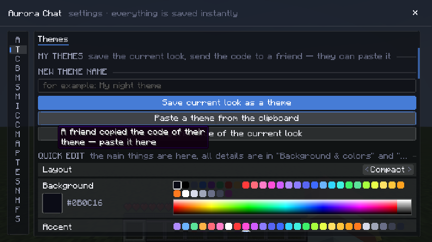
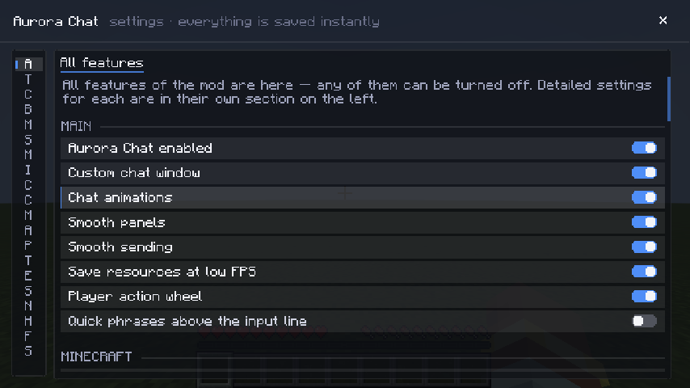
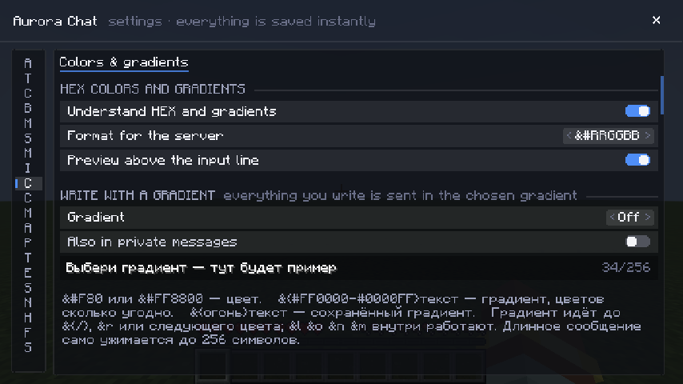

Aurora Chat
A beautiful, smooth and highly customizable chat for Minecraft. Move it, resize it, theme it — and it never lags. Красивый, плавный и настраиваемый чат для Minecraft. Двигай, растягивай, меняй тему — и ничего не лагает.

Everything a chat should haveВсё, что должно быть в чате
Every feature can be turned off. Settings: /achat or the ⚙ button in the chat header.Любую функцию можно выключить. Настройки — /achat или ⚙ в шапке чата.
Your windowСвоё окно
Drag and resize like a messenger. Compact, Discord-like or Messenger layout with bubbles.Двигай и растягивай как в мессенджере. Компактная раскладка, как в Discord или пузыри.
30+ themes30+ тем
Discord, Telegram, iMessage, Twitch, Steam, Spotify and more. Share your own theme as a code.Discord, Telegram, iMessage, Twitch, Steam, Spotify и другие. Своей темой можно поделиться кодом.
Channels & tabsКаналы и вкладки
Global / local badges, tabs for DMs, clan and system, your own tabs and separate windows.Значки G / L, вкладки ЛС, клан, система, свои вкладки и отдельные окна.
TranslatorПереводчик
Right-click any message to translate it, or translate what you type with one button.ПКМ по сообщению — перевод, а кнопка ⇄ переводит то, что пишешь ты.
Smart search & historyПоиск и история
Filters like nick: channel: date:, chat kept across restarts, logs by server and day.Фильтры ник: канал: дата:, чат сохраняется между запусками, журнал по дням.
Colors & gradientsЦвета и градиенты
A palette with HEX colors and gradients in two clicks, live preview of your message.Палитра с HEX и градиентами в два клика, предпросмотр сообщения.
HelpersПомощники
Scheduled messages, reminders, drafts, templates, AFK auto-reply, auto-greetings.Отложенные сообщения, напоминания, черновики, шаблоны, АФК-автоответчик, приветствия.
Clean chatЧистый чат
Anti-spam, word filter, ignore list, merged repeats ×N, compact joins and leaves.Антиспам, фильтр слов, игнор, склейка повторов ×N, компактные входы и выходы.
Player wheelКруговое меню
Look at a player and hold G — hug, headpat or any command, with little effects.Наведись на игрока и держи G — обнять, погладить или любая команда, со спецэффектами.
Smooth, not laggyПлавно и без лагов
New messages slide in and gently lift the old ones. Everything moves with sub-pixel precision — no stepping, even at high GUI scale.Новые сообщения плавно выезжают и мягко поднимают старые. Всё движется с точностью до долей пикселя — без «ступенек» даже на крупном масштабе.

Talk to anyoneОбщайся с кем угодно
- Right-click → Translate — the translation appears right under the message
- ПКМ → «Перевести» — перевод появится прямо под сообщением
- ⇄ button — translates what you type before you send it
- Кнопка ⇄ — переводит то, что ты пишешь, до отправки
- Auto-translate — optional, for messages in another script
- Автоперевод — по желанию, для сообщений на другой письменности
- English and Russian interface, follows your game language
- Интерфейс на русском и английском, как язык игры

Settings that make senseПонятные настройки
One window with a live preview, themes for the settings window itself, and plain words instead of cryptic options.Одно окно с живым предпросмотром, свои темы для самого окна настроек и простые слова вместо непонятных опций.



InstallУстановка
- Install Fabric Loader for Minecraft 26.1.2 and the Fabric API mod.
- Поставь Fabric Loader для Minecraft 26.1.2 и мод Fabric API.
- Download Aurora Chat from Modrinth and put the jar into your
modsfolder. - Скачай Aurora Chat на Modrinth и положи jar в папку
mods. - Open the game, press T — and type
/achatfor settings. Mod Menu is optional. - Запусти игру, нажми T, настройки —
/achat. Mod Menu — по желанию.